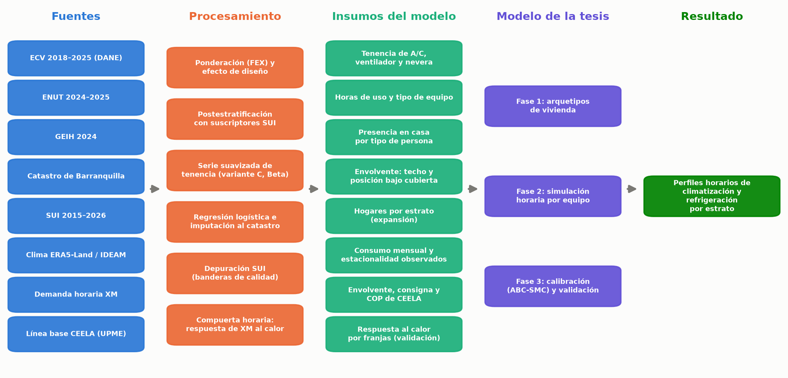
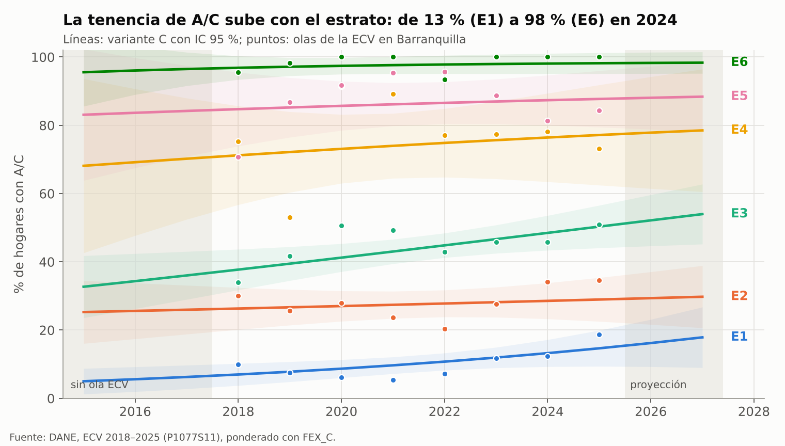

Datos de entrada de la tesis: demanda de enfriamiento residencial en Barranquilla#
María Carolina Cantillo Orozco · Maestría en Ingeniería Mecánica, Universidad del Norte · Actualizado: 19 de octubre de 2026
Resumen#
Objetivo. Construir, documentar y validar los datos de entrada del modelo bottom-up horario de climatización (aire acondicionado y ventiladores) y refrigeración residencial por estrato socioeconómico en Barranquilla, que se desarrolla en la tesis «Perfiles horarios de demanda eléctrica de climatización y refrigeración residencial por estrato socioeconómico en Barranquilla».
Datos. Encuesta Nacional de Calidad de Vida (ECV) 2018–2025 (DANE, 2026), Encuesta Nacional de Uso del Tiempo (ENUT) 2024–2025 (DANE, 2025), Gran Encuesta Integrada de Hogares (GEIH) 2024 (DANE, 2025), consumo facturado del Sistema Único de Información (SUI) 2015–2026 (Superintendencia de Servicios Públicos Domiciliarios, 2026) y catastro de Barranquilla con 332.718 viviendas (Alcaldía de Barranquilla, Gerencia de Gestión Catastral, 2026).
Métodos. Estimación ponderada con los factores de expansión y el efecto del diseño muestral (Kish, 1965, Wolter, 2007); postestratificación con los suscriptores del SUI (Holt y Smith, 1979); serie anual de tenencia por estrato mediante modelos lineales generalizados binomiales con sobredispersión (McCullagh y Nelder, 1989), combinados por promedio de especificaciones (Hoeting et al., 1999) y expresados como distribuciones Beta; regresión logística ponderada con errores robustos (Hosmer et al., 2013, MacKinnon y White, 1985), e imputación de la probabilidad de tenencia a cada vivienda del catastro.
Resultados. La tenencia de aire acondicionado (A/C) aumenta con el estrato, de 13 % en el estrato 1 a 98 % en el 6 (2024). En la ciudad pasa de 35,6 % de los hogares en 2019 a 41,2 % en 2024, con un intervalo de confianza del 95 % de ± 2,9 puntos porcentuales. A igual estrato e ingreso, los techos livianos reducen la probabilidad de tener A/C (razón de momios de 0,37 para asbesto-cemento y 0,15 para zinc). El ventilador (98 %) y la nevera (más de 90 %) son casi universales. En 82–86 % de los hogares alguien permanece en la vivienda durante todo el día hábil. El consumo facturado aumenta entre agosto y septiembre respecto a febrero y marzo en 11 % (estrato 1) a 29 % (estrato 5), en concordancia con la tenencia de A/C.
Implicaciones para el modelo. La tenencia de A/C se incorpora como distribución por estrato y año, la envolvente se asigna antes que el equipo para conservar su relación con la tenencia, y la presencia diurna elevada descarta el supuesto de vivienda vacía de día propio de los modelos europeos. Cada parámetro, con su fuente e incertidumbre, se resume en el capítulo Insumos del modelo.
Abstract#
Purpose. To build, document and validate the input data of an hourly bottom-up model of residential space cooling (air conditioning and fans) and refrigeration by socioeconomic stratum in Barranquilla, Colombia.
Data. Quality of Life Survey (ECV) 2018–2025, Time Use Survey (ENUT) 2024–2025, Integrated Household Survey (GEIH) 2024, billed electricity consumption from the national utility information system (SUI) 2015–2026, and the city cadastre (332,718 dwellings).
Methods. Weighted estimation accounting for the survey design effect, post-stratification to utility subscribers, binomial generalized linear models with overdispersion combined by averaging two specifications and summarized as Beta distributions, weighted logistic regression with robust standard errors, and imputation of ownership probabilities to every dwelling in the cadastre.
Results. Air-conditioner ownership rises from 13 % in stratum 1 to 98 % in stratum 6 (2024); city-wide it grows from 35.6 % of households in 2019 to 41.2 % in 2024 (95 % CI ± 2.9 percentage points). At equal stratum and income, lightweight roofs lower the odds of owning an air conditioner (odds ratios of 0.37 for asbestos-cement and 0.15 for zinc, relative to concrete). Fans (98 %) and refrigerators (over 90 %) are nearly universal, and in 82–86 % of households someone stays home all weekday. Billed consumption rises 11–29 % from February–March to August–September, increasing with air-conditioner ownership.
Flujo de los datos#


Figura 1 Flujo de los datos de entrada hacia las tres fases del modelo de la tesis.#
Tenencia de aire acondicionado#
Uno de los insumos centrales del modelo es la tenencia de aire acondicionado (A/C) por estrato socioeconómico y por año. La ECV del DANE registra esta variable, pero el tamaño de la muestra de Barranquilla en cada estrato es reducido, por lo que las proporciones anuales presentan una variabilidad muestral elevada. Para obtener una serie estable, la tenencia de cada estrato se modela con una regresión logística sobre las olas 2018–2025 de la encuesta. El modelo entrega una estimación para cada año entre 2015 y 2027; la proporción de hogares con A/C en la ciudad es de 35,6 % en 2019, último año del periodo de calibración (2015–2019), 41,2 % en 2024, año de referencia de la tesis, y 43,1 % en 2025, la ola más reciente.
Para cada estrato se ajustaron dos especificaciones. La primera supone que la tenencia cambia a un ritmo constante en el tiempo (tendencia lineal en escala logit) en los seis estratos. La segunda conserva esa tendencia solo donde la prueba de significancia la respalda, los estratos 1 y 3 (p < 0,05), y en los estratos 2, 4, 5 y 6, cuya pendiente estimada no se distingue de la variabilidad muestral (p entre 0,39 y 0,53), supone un nivel constante igual al promedio de las olas. Como los datos no permiten preferir una especificación sobre la otra, la serie adoptada (variante C) promedia ambas con igual peso. Las dos coinciden en los años con encuesta y se separan al extrapolar a 2015–2017 y 2026–2027 (hasta 2,9 puntos para la ciudad en 2015); esa diferencia se incorpora a la incertidumbre de la serie, junto con el efecto del diseño muestral de la encuesta. Para la ciudad, el intervalo de confianza del 95 % en 2024 es de ± 2,9 puntos porcentuales.


Figura 2 Tenencia de A/C por estrato y año (variante C) con su intervalo de confianza del 95 %; los puntos son las olas de la ECV. La ola 2020 no entra en el ajuste.#
Cómo leer este sitio#
Análisis y conclusiones, Insumos del modelo y Cambios a la propuesta: los resultados principales y lo que la tesis toma de ellos.
Encuestas usadas y representatividad: qué encuestas y años se usaron y qué parte de la población representa cada muestra.
Fuentes, Resultados, Metodología y Serie de tenencia, error de la encuesta e imputación: cifras y cálculos detallados.
Respuesta horaria al calor y Línea base de CEELA: la demanda horaria de XM frente al clima (compuerta horaria) y la envolvente, la climatización y los consumos de los edificios representativos de CEELA.
Coherencia entre fuentes y Supuestos, sensibilidad y limitaciones: la validación de los datos y el registro de supuestos.
Reproducibilidad y Referencias: scripts, tablas y bibliografía.
Las bases por hogar y por vivienda no se publican aquí; los microdatos son públicos en el catálogo del DANE y el SUI.
Cómo citar#
Cantillo Orozco, M. C. (2026). Datos de entrada de la tesis: demanda de enfriamiento residencial en Barranquilla [sitio web y repositorio]. Universidad del Norte. https://github.com/mcarocantillo/tesis-datos-barranquilla